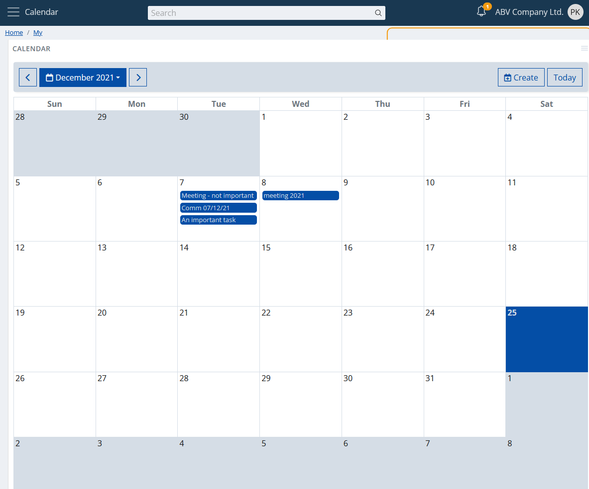

Overview
As the name suggests, it's a calendar. "My Calendar". More precisely, this is a versatile calendar control, fully (smart) responsive, visualizing your activities.

We'll skip the description of the trivial calendar functionality- how you can navigate between the months, how the today's date is marked, etc... We'll just show you the essentials.
Activities
This is the main goal of the calendar in the ERP.net Web Client.
It will show in a convenient way all your activities. This way you can see them in a convenient, natural way, without the need to open navigators, apply filters, etc.

Also you can create a new activity. Just click on the "Create" button:

Fill in the required fields, save it and you're done. The new activity will appear on the day for which it's planned.
View types
The calendar app supports different view types. You can switch between them from the app's panel settings.

When you choose the new type of view, the changes will take effect immediately.
Monthly
The default view type. Self-explanatory, shows the days of the selected month, alignining the raster with the days of the previous and next, graying them out.

Workweek
An alternative view, showing the five days of the selected work week as columns. The working time will be visualized on the vertical axis.

Smart responsiveness
Why smart? Because it doesn't just scale to the size of your screen, but it takes into account how you really could use it, according the size of your screen.
If your screen doesn't show a large area (e.g., your mobile), then the so-called responsiveness comes.

That's the monthly view on a mobile. Yes, it's not just scaled, it's a different layout to fit your needs. The activities are shown as "dots" and now you have agenda. Click (more specifically "touch") on a day and the agenda will show your activities as a list.

Additionally, you may notice that the calendar's toolbar is refactored. Now you have header and footer toolbars.

Mobile touch gestures support
Mobile touch gestures are also supported. You can swipe left or right on your screen and as a result, you will move the calendar backward or forward.
I am a widget
This is not something new for a "My app", but rather a key functionality. You can add a calendar wherever you want as a widget panel.